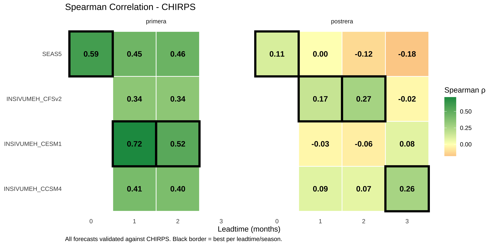

Chapters 1 and 2 evaluated forecasts against two observation sources:
ERA5: Global reanalysis (SEAS5’s “native” validation)
ENACTS: Station-blended satellite product (operational standard for Guatemala)
These showed consistent results: SEAS5 performs well for Primera, all models struggle with Postrera. But what if both observation sources happen to favor SEAS5? To break potential ties and increase confidence, we introduce a third independent observation source: CHIRPS.
3.2 Observational Data Sets
This analysis uses three independent observation sources:
CHIRPS (Climate Hazards Group InfraRed Precipitation with Station data) is a quasi-global rainfall dataset that blends satellite imagery with station data. Key characteristics:
Feature
CHIRPS
ENACTS
ERA5
Resolution
0.05° (~5km)
0.05° (~5km)
0.25° (~25km)
Source
Satellite + stations
Satellite + stations
Model reanalysis
Coverage
50°S-50°N
Regional
Global
Temporal
1981-present
Varies
1940-present
CHIRPS and ENACTS both blend satellite and station data, but use different algorithms and station networks. This makes CHIRPS a useful independent check - if forecasts perform well against multiple observation sources, we can be more confident in the skill assessment.
NoteWhy Rank-Based Metrics Work Across Different Observation Sources
Because CHIRPS and ENACTS have different climatologies (CHIRPS shows ~300mm higher Primera totals), comparing raw mm errors across sources would be misleading. Instead, we focus on rank-based metrics:
Spearman correlation: Based on ranks, not absolute values. A correlation of 0.7 means the same thing whether rainfall is measured in mm or inches.
ROC-AUC: Asks “do lower forecasts correspond to drought years?” where drought is defined by each source’s own RP4 threshold. This is purely about ranking.
These metrics allow fair comparison of forecast skill across observation sources with different absolute values.
create_metric_heatmap <-function(df, metric_col, metric_name, title, caption, midpoint =0) { df_plot <- df |>group_by(window, leadtime) |>mutate(is_best =!!sym(metric_col) ==max(!!sym(metric_col), na.rm =TRUE)) |>ungroup()ggplot(df_plot, aes(x =factor(leadtime), y = forecast_source)) +geom_tile(aes(fill =!!sym(metric_col)), color ="white", linewidth =0.5) +geom_tile(data = df_plot |>filter(is_best),fill =NA, color ="black", linewidth =1.5 ) +geom_text(aes(label =sprintf("%.2f", !!sym(metric_col))), size =4, fontface ="bold", color ="black") +facet_wrap(~window) +scale_fill_gradient2(low ="#D73027", mid ="#FFFFBF", high ="#1A9850",midpoint = midpoint, name = metric_name ) +labs(title = title, x ="Leadtime (months)", y =NULL, caption = caption) +theme_minimal() +theme(legend.position ="right", panel.grid =element_blank(),plot.caption =element_text(hjust =0))}create_metric_heatmap( df_metrics, "spearman", "Spearman ρ","Spearman Correlation - CHIRPS","All forecasts validated against CHIRPS. Black border = best per leadtime/season.")

Surprise finding: INSIVUMEH_CESM1 shows the strongest Spearman correlation for Primera at LT1 (0.72) and LT2 (0.52), outperforming SEAS5. This is the opposite of what we saw with ERA5 and ENACTS.
Against CHIRPS, all models have dry bias for Primera and wet bias for Postrera. SEAS5 has the largest dry bias for Primera (~280mm under), while INSIVUMEH models are closer (~120mm under).
# Count wins across all obs sources and leadtimesdf_postrera_wins <- df_all_metrics |>filter(window =="postrera") |>group_by(obs_source, leadtime) |>slice_max(auc, n =1) |>ungroup() |>count(forecast_source, name ="wins") |>mutate(model =str_remove(forecast_source, "INSIVUMEH_")) |>arrange(desc(wins))df_postrera_wins |> knitr::kable(col.names =c("Model", "Wins (of 12)", "Short Name"),caption ="Postrera: Win count across all observation sources and leadtimes" )
Postrera: Win count across all observation sources and leadtimes
Model
Wins (of 12)
Short Name
INSIVUMEH_CCSM4
6
CCSM4
SEAS5
4
SEAS5
INSIVUMEH_CFSv2
2
CFSv2
Postrera verdict: No model shows reliable skill. While CCSM4 wins 6 of 12 obs/leadtime combinations, the pattern is suspicious:
CCSM4 shows worse skill at LT1 than at LT2-3
This is backwards - forecast skill should degrade with leadtime, not improve
This inverted pattern suggests we may be seeing noise rather than genuine skill
At LT1 (most actionable), all models hover near AUC 0.5-0.7 - barely above random
The tie-breaker does not resolve Postrera. No model can be recommended with confidence.
3.5 Conclusions
3.5.1 What the Tie-Breaker Tells Us
Primera skill is robust: Multiple models show genuine skill (AUC > 0.7) across all three observation sources. This isn’t an artifact of one particular dataset.
SEAS5 vs CESM1 for Primera: SEAS5 performs consistently well across observation sources. CESM1 shows exceptional performance against CHIRPS specifically (AUC 0.93 at LT1), but weaker against ERA5/ENACTS. If operational observations are closer to CHIRPS characteristics, CESM1 might be worth considering.
Postrera remains unresolved: No model shows reliable, consistent skill. CCSM4’s apparent better performance at longer leadtimes is suspicious - skill should not improve with leadtime. This inverted pattern is likely noise from the small sample (only ~6 drought events in 25 years).
3.5.2 Final Recommendations
Season
Leadtime
Recommended
Confidence
Rationale
Primera
LT0
SEAS5
High
Only option, strong skill (AUC ~0.87)
Primera
LT1
SEAS5
Medium-High
Wins on ERA5/ENACTS; CESM1 competitive on CHIRPS
Primera
LT2
SEAS5
Medium-High
Consistent across obs sources
Postrera
All
None
Low
No model shows reliable skill; consider monitoring-based triggers
3.5.3 The Postrera Problem
Postrera forecasts do not pass the basic sanity check: skill should not improve at longer leadtimes. The apparent “wins” for CCSM4 at LT2-3 are likely spurious. With only ~6 drought events in the 25-year record, we simply don’t have enough data to distinguish signal from noise for Postrera.
Recommendation: For Postrera, consider monitoring-based triggers (e.g., observed rainfall deficits during the season) rather than relying on seasonal forecasts issued months in advance.
3.6 Appendix: CHIRPS vs ENACTS Comparison
How different are CHIRPS and ENACTS for Chiquimula? Understanding this helps interpret why forecast skill might differ across observation sources.
Compare CHIRPS and ENACTS observations
# Load ENACTS for comparisondf_enacts_compare <- enacts$load_enacts_seasonal("chiquimula")df_compare <- df_chirps |>rename(chirps = obs_mm) |>left_join( df_enacts_compare |>select(year, window, enacts = obs_mm),by =c("year", "window") ) |>filter(!is.na(enacts))# Correlationcorr_primera <- df_compare |>filter(window =="primera") |>summarise(r =cor(chirps, enacts)) |>pull(r)corr_postrera <- df_compare |>filter(window =="postrera") |>summarise(r =cor(chirps, enacts)) |>pull(r)df_compare |>ggplot(aes(x = enacts, y = chirps)) +geom_abline(slope =1, intercept =0, linetype ="dashed", color ="grey50") +geom_point(alpha =0.6, size =3) +geom_smooth(method ="lm", se =TRUE, color ="#007CE1", fill ="#007CE1", alpha =0.2) +facet_wrap(~str_to_title(window), scales ="free") +labs(title ="CHIRPS vs ENACTS: Same Region, Different Estimates",subtitle =sprintf("Primera r = %.2f, Postrera r = %.2f", corr_primera, corr_postrera),x ="ENACTS (mm)",y ="CHIRPS (mm)",caption ="Dashed line = 1:1 agreement. CHIRPS consistently higher for Primera." )
CHIRPS and ENACTS are correlated but not identical. CHIRPS tends to estimate higher rainfall for Primera (~300mm more on average). This means a forecast calibrated to one source may not match the other perfectly - making the three-source comparison a meaningful robustness check.